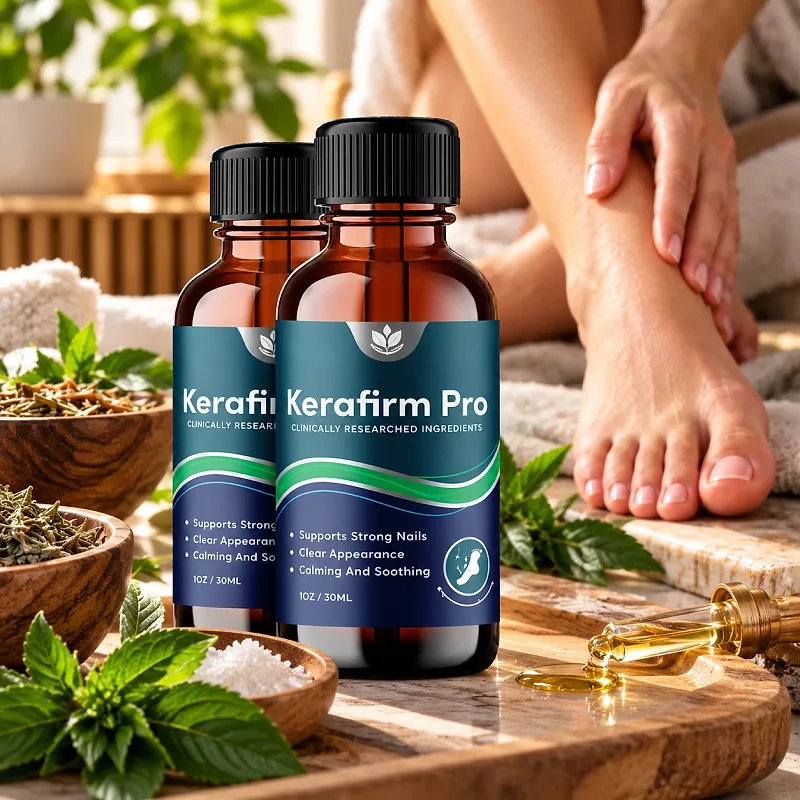
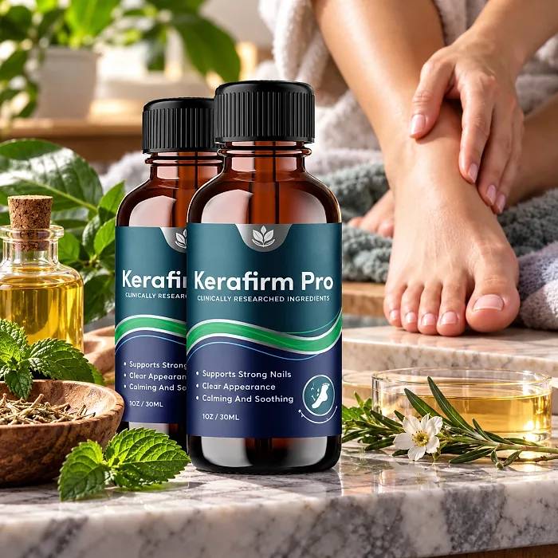
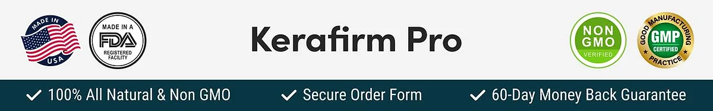

What Is Kerafirm Pro And How Does It Work?
Kerafirm Pro is a topical nail health formula designed to support strong nails, a clear appearance, and calm, soothed skin around the nails for adults who want to address the discolored, brittle, or thickened look that toenails can take on with age, sweaty shoes, and busy routines through a natural, easy approach — without complicated soaks or temporary cosmetic fixes.
It comes in a 1 oz (30 ml) bottle with a brush applicator, and its oil-based formula combines Undecylenic Acid, Tea Tree Oil, Sweet Almond Oil, Flaxseed Oil, Aloe Vera, Vitamin E, Lemongrass Oil, and Lavender Oil, applied directly to the nail and the cuticle, where the product is needed.
The ingredients in Kerafirm Pro are plant oils, an essential oil blend, and a fatty acid that, according to the official website, form a precisely balanced blend of potent oils and skin-supporting nutrients, particularly for people who prefer one simple routine over creams, soaks, and multiple products.
Rather than covering the nail with polish, Kerafirm Pro focuses on supporting the nail and the skin around it, as the official website explains, with a precision applicator that helps coat the whole nail and reach the cuticle, working gradually as the nail grows out.
With consistent daily use, a formula of this kind is intended to help with a cleaner, healthier-looking nail and softer, calmer skin, especially when combined with good foot hygiene, dry socks, breathable shoes, and regular nail trimming.
From a practical standpoint, Kerafirm Pro is a daily nail and skin care oil — it is applied in seconds, and the bottle fits easily in a bathroom cabinet or travel bag.
Made with clinically researched ingredients, according to the label, and described by the official website as natural, non-GMO, and easy to use, Kerafirm Pro is designed for regular daily use, focusing on safety, purity, and quality for those seeking a natural, non-prescription route to healthier-looking nails.
Kerafirm Pro Ingredients
The label of Kerafirm Pro lists the ingredients below, chosen to support strong nails, a clear appearance, and calm skin as part of a consistent daily routine:
Undecylenic Acid USP (5%): A fatty acid derived from castor oil, widely used in nail and foot care to support a clean, healthy-looking nail.
Tea Tree Essential Oil (Melaleuca alternifolia): A classic Australian essential oil used to keep nails and skin clean.
Sweet Almond Oil (Prunus amygdalus dulcis): A light oil that softens the cuticle and nourishes the skin.
Flaxseed Oil (Linum usitatissimum): A plant oil rich in fatty acids that supports moisture and flexibility.
Aloe Vera Leaf Extract (Aloe barbadensis): A soothing plant extract that calms the skin around the nail.
Vitamin E (DL-Alpha Tocopherol Acetate), Lemongrass Oil, and Lavender Oil: An antioxidant and two essential oils that protect, soothe, and add a fresh scent.
Together, these ingredients are designed to support nail strength, appearance, and skin comfort. The base of the formula is isopropyl palmitate, which helps the oils spread. A point for careful readers: the official sales page also lists clove, manuka, camphor, menthol, walnut, and chia seed oils, which do not appear on the label, so the label is the reference to trust.
Kerafirm Pro is designed for daily use, offering a natural, non-prescription approach to nail care, without complicated routines.
Kerafirm Pro Side Effects
Kerafirm Pro is generally considered well tolerated and is designed for adults of different ages and lifestyles who are looking for a safe, natural, and simple approach to nail care, especially those who prefer a quick topical routine to support strong, clear-looking nails without resorting to harsh products with severe side effects.
The official website describes the formula as natural, non-GMO, and easy to use, and the label lists every ingredient, so anyone with a known allergy to tea tree, lavender, lemongrass, or nuts (almond) can check it first, reinforcing transparency, safety, and reliability.
With no widespread reports of serious side effects, Kerafirm Pro is generally considered a well-tolerated option. A few points deserve attention: according to the label, it is for external use only, it must not get into the eyes, and it must not be swallowed; if it is swallowed, drink water and seek medical attention immediately. Essential oils can irritate sensitive skin, so it is wise to test it on a small area first and to stop using it if irritation occurs, as the label says. Painful, swollen, or spreading changes around a nail, especially in people with diabetes or poor circulation, should be checked by a doctor. It is not intended to diagnose, treat, cure, or prevent any disease, and individual results may vary.
Pregnant or nursing women, children, and anyone with a medical condition should talk to a physician before using Kerafirm Pro, and it should be kept out of the reach of children and pets, ensuring it fits safely within their personal care routine.
Kerafirm Pro Dosage
The recommended way to use Kerafirm Pro is to apply it 4 times a day, twice in the morning and twice in the afternoon, as printed on the label. It is designed to fit easily into a daily routine, and each application takes only a few seconds.
The label explains how: use the enclosed brush applicator to coat the nail, and a cotton swab to work the solution into the cuticle. Applying it to clean, dry nails, for example after a shower, helps the oils spread evenly.
For best results, consistency is key. Each bottle holds 1 oz (30 ml), and because nails grow slowly, any change in appearance takes time; the refund policy itself recommends using the product for at least 3 months before deciding.
There is no need for complex schedules or soaks. A simple daily routine is designed to build results gradually alongside good foot hygiene, changing socks daily, letting shoes dry, and keeping nails trimmed straight across.
As with any topical product, it's important to follow the label and to wash your hands after each application. Kerafirm Pro works best when used regularly, combined with healthy daily habits.
Kerafirm Pro – Refund Policy
You can order Kerafirm Pro with confidence, knowing that every purchase is protected by a 60-day money-back guarantee counted from the day the package is delivered. This allows you to try the formula and decide if it delivers the support you expect.
According to the refund policy on the official website, customers who are not fully satisfied can request their money back within 60 days of delivery. The policy recommends using the product for at least 3 months before deciding, and asks customers to send back all the bottles, whether they are empty, opened, or sealed, together with the packing slip. The return shipping cost is paid by the customer.
How the refund process works: If you decide Kerafirm Pro is not right for you, email customer support with "Refund Request" in the subject line, then send all the bottles to 19655 E 35th Drive, Suite 100, Aurora, CO 80011, with a note containing your full name, email, and order number. Once the package is received, your refund is processed, and you receive an email confirming it.
Customer Support Contact Information: contact@kerafirmpro-product.com, as printed on the product label and listed on the official website. Order questions can also be sent to BuyGoods, the retailer.
Refund Processing Time: According to the policy, processing takes between 5 and 10 days, and the time for the amount to appear on your statement depends on your bank or card company.
This refund policy is designed to give customers a clear and transparent experience when trying Kerafirm Pro.
Kerafirm Pro – Where To Buy
Kerafirm Pro is sold through its official website, so if you decide to try it, it's important to be careful about where you purchase it. The official website is the only sales channel the manufacturer lists, and it does not point to marketplaces such as Amazon, eBay, or Walmart.
Listings on third-party platforms may look similar but cannot be verified as authentic, raising concerns about safety, quality, and freshness. Products purchased outside the official source may not be covered by the 60-day money-back guarantee.
For this reason, it makes sense to purchase Kerafirm Pro only through the official website. Buying directly from the official source ensures you receive the authentic original product, made in the USA, with access to customer support and the full guarantee. According to the official website, every order is a one-time payment with no subscription or hidden charges, and orders are processed by BuyGoods, the retailer named on the site.
To avoid counterfeit batches and ensure maximum quality, always verify that you are ordering from the official Kerafirm Pro website before completing your purchase.
To ensure you’re getting the authentic product, most users choose to visit the official website.
Is Kerafirm Pro A Scam?
Based on what the official website and the product label disclose, Kerafirm Pro does not appear to be a scam. It is a real topical product, sold through an established retailer, and formulated to support strong nails, a clear appearance, and calm skin as part of a consistent routine.
The ingredients used in Kerafirm Pro — Undecylenic Acid, Tea Tree Oil, Sweet Almond Oil, Flaxseed Oil, Aloe Vera, Vitamin E, Lemongrass Oil, and Lavender Oil — are known in nail and foot care, and the label publishes the full ingredient list, including the 5% concentration of undecylenic acid, for transparency.
In addition to its formula, Kerafirm Pro comes with a brush applicator, and the label identifies the distributor, with an address in Aurora, Colorado, and a support email, with a focus on safety, purity, and consistency.
The official website publishes no written customer testimonials, only an overall rating, so this review does not quote any. A fair point of criticism is that the sales page lists several oils that are not on the label and uses treatment language about fungus, while the label correctly says it is not intended to treat any disease; the bonus guides also cover unrelated topics. Results vary from person to person, and persistent nail problems deserve a visit to a doctor or podiatrist.
Kerafirm Pro is backed by a 60-day money-back guarantee, and orders are one-off purchases with no hidden autoship. The refund steps, including sending back all bottles and paying the return shipping, are published on the official website, which gives customers a clear path if the product does not meet their expectations.
If you're looking for a simple daily oil to support strong, clear-looking nails and calm skin without complicated routines, Kerafirm Pro is worth considering — especially when purchased directly from the official website.
For those who want to verify product details or check current availability, the official Kerafirm Pro website remains the safest option.

Check Availability On Official Website
